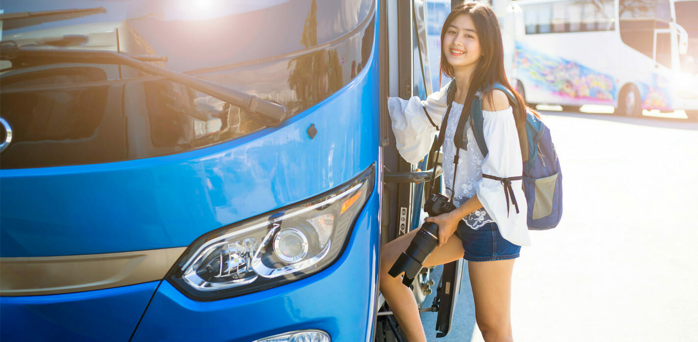
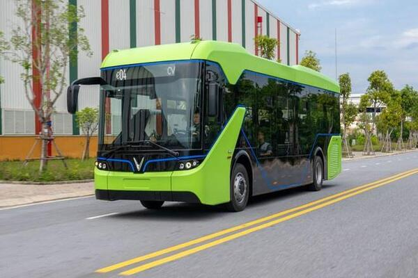
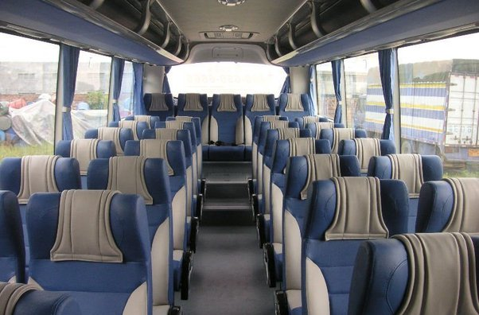
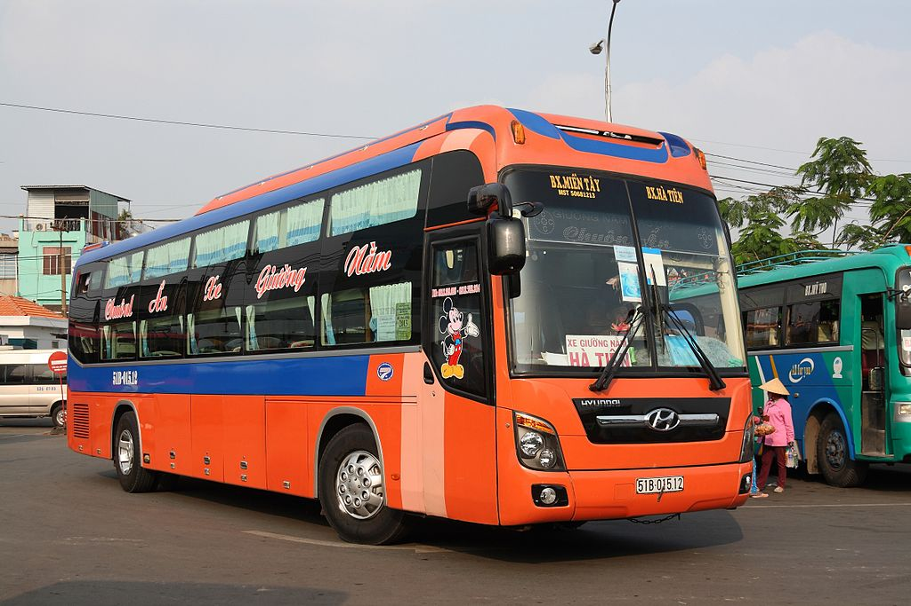
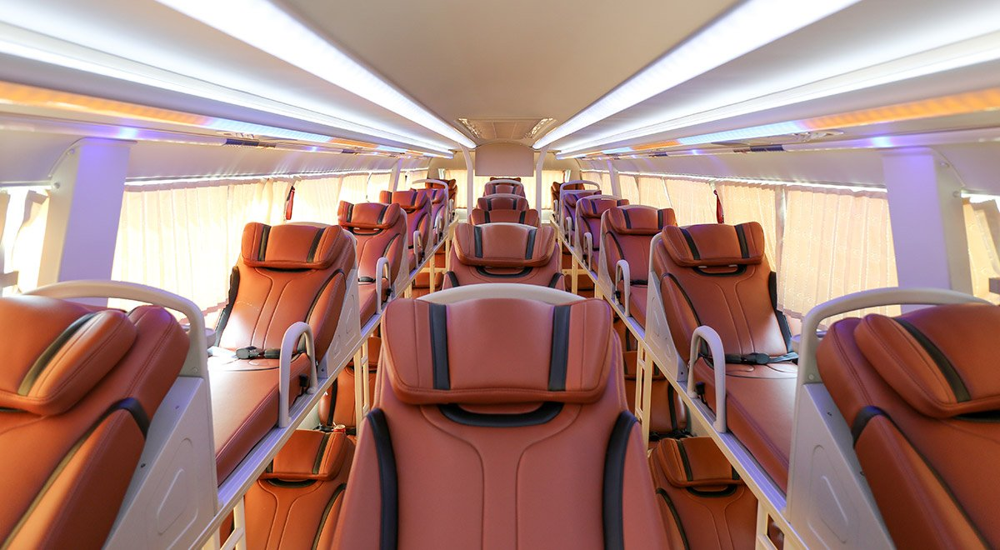
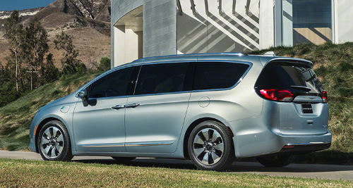
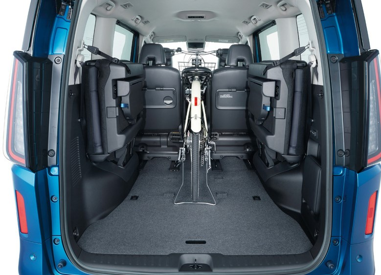
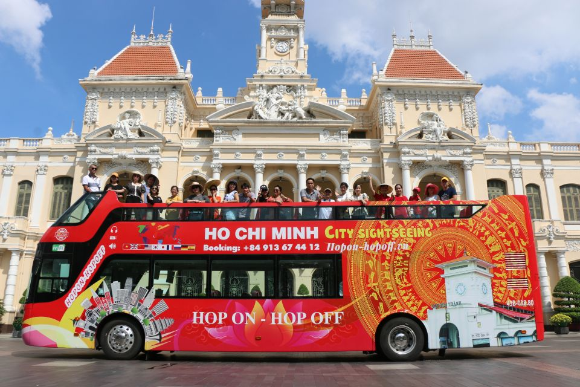
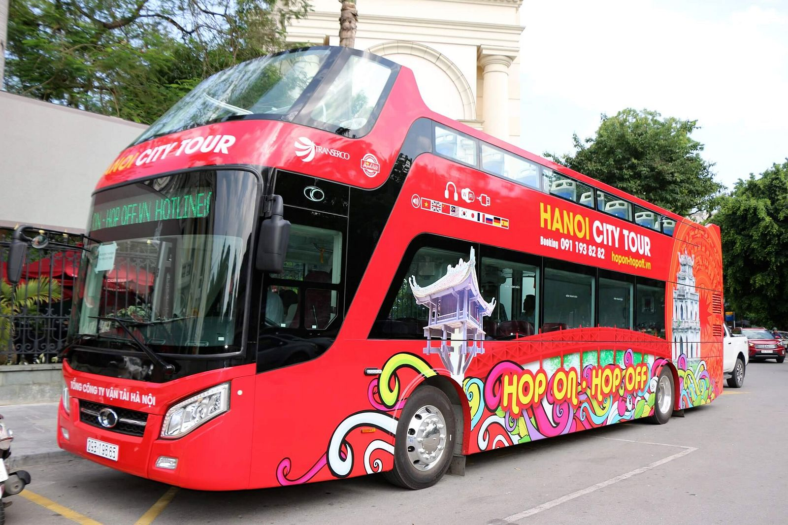
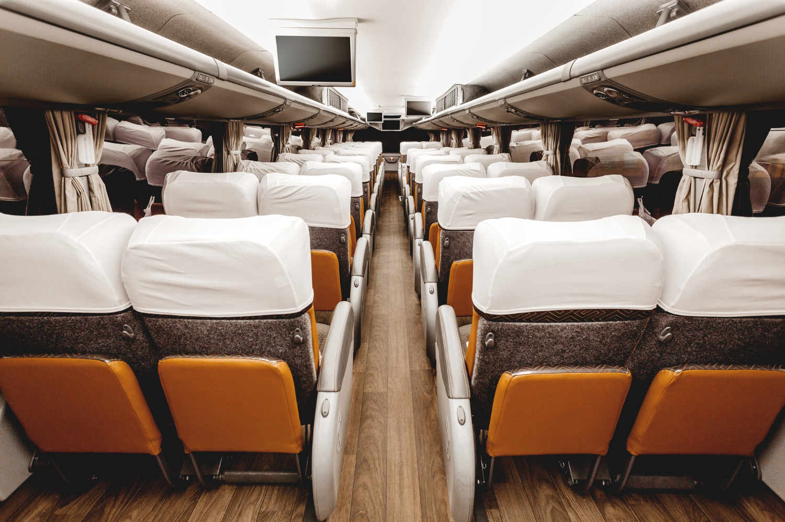

Travelling by bus in Vietnam is an affordable and practical way to travel across the country and the best option to reach the most popular cities, some of which are disconnected from the railway network or have no airport nearby.
We support advance ticket booking for more than 200 bus stations and bus stops across Vietnam, including the major destinations such as Hanoi, Ha Long and in the North, Phong Nha, Hue, Da Nang, Hoi An and Da Lat in the Central Highlands, Ho Chi Minh, Vung Tau, Can Tho, Ha Tien and Rach Gia in the South.
Type of buses in Vietnam
Road transportation in Vietnam is carried out by three types of vehicles: seated buses, sleeper buses, minivans, city buses and luxury buses. Bus companies operate modern fleets of vehicles equipped with air-conditioning, seats or berths, and on-board amenities. Depending on the travel distance and the level of comfort your prefer, you can choose among bus, minibus or minivan available for your route.
Seated buses
Seated buses generally cover long distances during daytime and connect two or more cities in different provinces.
The most common models of seating buses in Vietnam are single-deck coaches equipped with reclining seats. Large buses have capacity for 30 to 40 passengers, whereas minibuses can carry between 15 to 30 passengers.
Most seated buses have air-conditioning and the staff on-board provides water and refreshing towels.
Sleeper buses
Sleeper buses generally cover long distances overnight and connect two or more cities in different provinces. Journeys can take up to 8 to 12 hours, so buses are prepared for passengers to sleep during most part of the journey.
The most common models of sleeper buses in Vietnam are double-deck coaches equipped with fixed berths and capacity for 30 to 40 passengers.
Most sleeper buses have air-conditioning and the staff on-board provides water, refreshing towels and sometimes blankets. Some modern buses are equipped with Wi-Fi internet and onboard entertainment system.
Minivans
Minivans generally cover short distances during daytime and connect cities in the same province or neighbor provinces. For short journeys of 1 to 3 hours companies operate minivans equipped with standard seats. For long journeys between 3 to 5 hours companies operate limousine vans equipped with upgraded seats designed to offer passengers a higher level of comfort.
The most common models of minivan in Vietnam are Ford Transit and Hyundai Solati, with the interior refurbished with three rows of seats accommodating 9 passengers, or one row of seats at the back and four individual seats in the center accommodating up to 7 passengers. Additionally, there is space for 1 extra passenger in the front of the van, seating next to the driver.
Most minivan vehicles are equipped with air conditioning, Wi-Fi internet, onboard entertainment system, reading light and USB phone charger to ensure a pleasant trip.
City buses
A city bus is a commonly used form of public transportation in urban areas. It operates on designated routes, picking up and dropping off passengers at designated stops. These buses provide an affordable and convenient way for people to commute within the city.
They are equipped with comfortable seating, handrails for stability, and often have standing room for peak hours.
A city bus typically has a capacity to carry a significant number of passengers, ranging from around 40 to 100 individuals, depending on its size and design. These buses are designed to accommodate both seated and standing passengers, maximizing their capacity during busy hours.
Luxury buses
A luxury bus is a lavish mode of transportation that offers a premium travel experience. It boasts spacious, comfortable seating with ample legroom, often featuring reclining seats, adjustable headrests, and extra amenities such as USB charging ports, individual entertainment systems, and even onboard restrooms

These buses are designed for utmost comfort, catering to travelers who seek a higher level of convenience and style. From elegant interiors to attentive service, luxury buses provide a superior way to travel in opulence and relaxation.
Luxury buses typically accommodate a smaller number of passengers compared to standard buses, usually ranging from 20 to 40 passengers. The focus on a lower passenger count contributes to the upscale ambiance and enhanced amenities that define luxury bus travel.